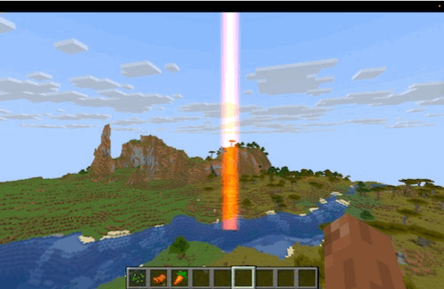
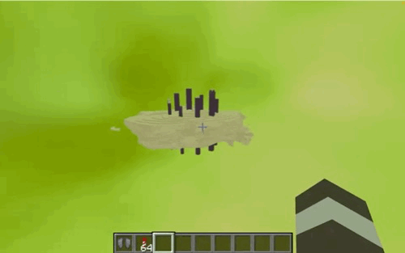

Team Members: Nicholas Angelici, Kathleen Hua, Mandy Pham, Sophia Prakasa
We have successfully established our Minecraft shader development environment and familiarized ourselves with the Iris shader workflow. We mapped the necessary file paths across operating systems, noting that on Windows, shader packs must be placed in the hidden %appdata%\.minecraft\shaderpacks directory, while the development repository should be cloned separately.
Our technical work has primarily focused on the shaders/composite.fsh file, which handles the full-screen post-processing effects by reading colortex0 and outputting the final screen image. Through this, we successfully transitioned a basic grayscale tutorial into a functional red-screen shader. We learned that we can achieve our desired cinematic look by remapping the RGB output directly within the shader, rather than having to modify the base Minecraft engine.
We have successfully developed a working shader concept that produces a crimson cinematic grade. Our current build successfully layers multiple visual elements together, including glow, haze, glitter, dust, and a large red swirled sky inspired by our Project Hail Mary reference images.

We also successfully implemented localized visual effects. For example, we programmed a dynamic environmental effect where the world gradually shifts to red as the player moves closer to a designated stream of light. Currently, our particle and dust effects operate in screen-space, effectively approximating the cinematic aesthetic of the Petrova Line and Astrophage without the heavy computational cost of rendering true 3D particles.

Relative to our original project schedule, we are currently on track. We have completed our Week 1 setup goals and our Week 2 goals of implementing fundamental core lighting and color shifts. We have also made significant headway into our Week 3 goals by developing the aesthetic foundation for the Petrova Line swarm using post-processing effects.
Additionally, we have reviewed the TA feedback from our initial proposal. We recognize the need to finalize a specific benchmark scene to evaluate our final render, and we are working to clarify how our individual team responsibilities will be divided for the remaining tasks.